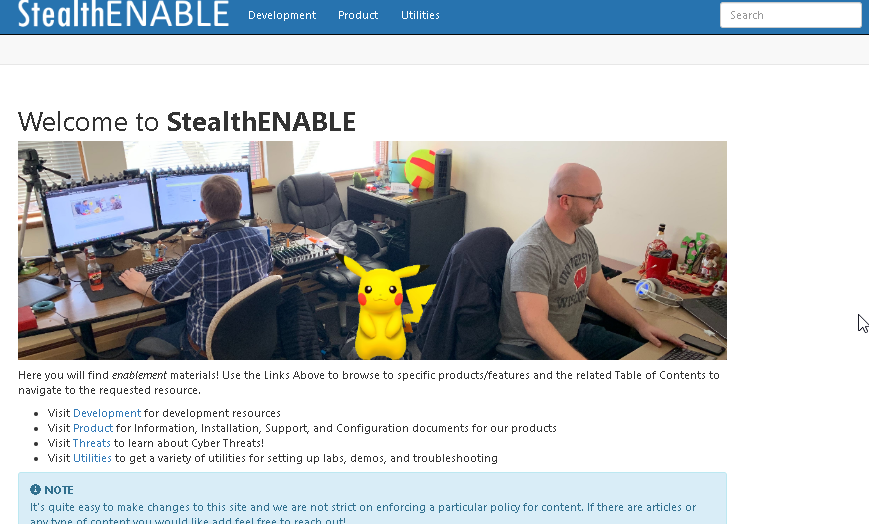

Summary: To streamline content creation and provide more flexibility, the StealthDEFEND and StealthRECOVER Product management teams have created an internal site called StealthENABLE, which contains significantly more help content than current Salesforce KBs. So if you can't find anything in Salesforce, try looking at StealthENABLE. This is not internet-facing and therefor requires VPN access.
Issue: StealthENABLE is available at http://sbnjsd2.sbitsinc.com/ or http://192.168.58.151:8080/
It contains useful information for Demos, Setup/Installation, Threats, Support topics, and helpful Utilities. You may have issues viewing, depending on the browser.
Instructions: Here's what the homepage should look like:

Product: StealthDEFEND
Module: SA - Action Module - Active Directory;SA - DC - ExchangeMailbox;StealthDEFEND - General;StealthRECOVER - General
Versions: All
Legacy Article ID: 2325